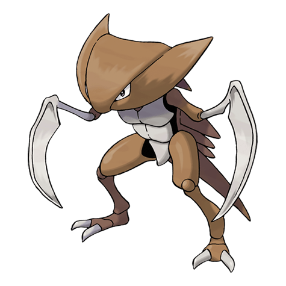

Назад
Ликитунг

Кабутопс — Покемон 1 поколения под номером 141 в Покедекс. Обитает он в регионе Канто и относится к Каменному и Водному типу. Это финальная стадия эволюции Покемона Кабуто. В древние времена Кабутопс обитал под водой, охотясь за добычей. Изменения в его жабрах и ногах свидетельствуют о том, что этот Покемон постепенно эволюционировал для жизни на суше.
Тип:
Водяной
Каменный
Эволюция
# 141 Кабутопс
Финальная стадия